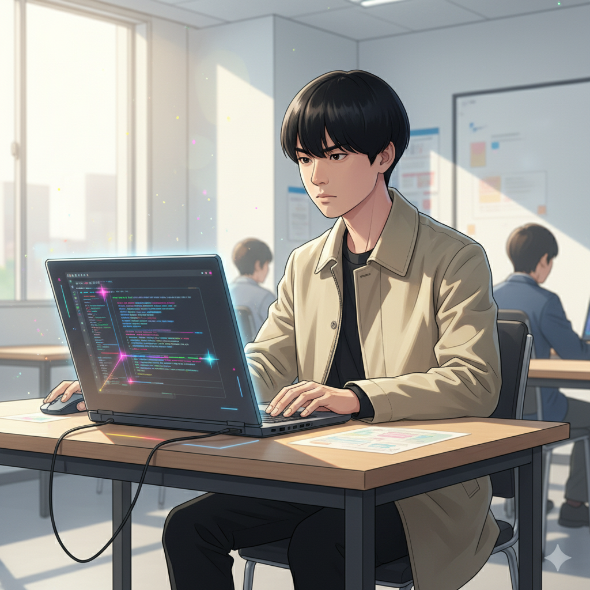
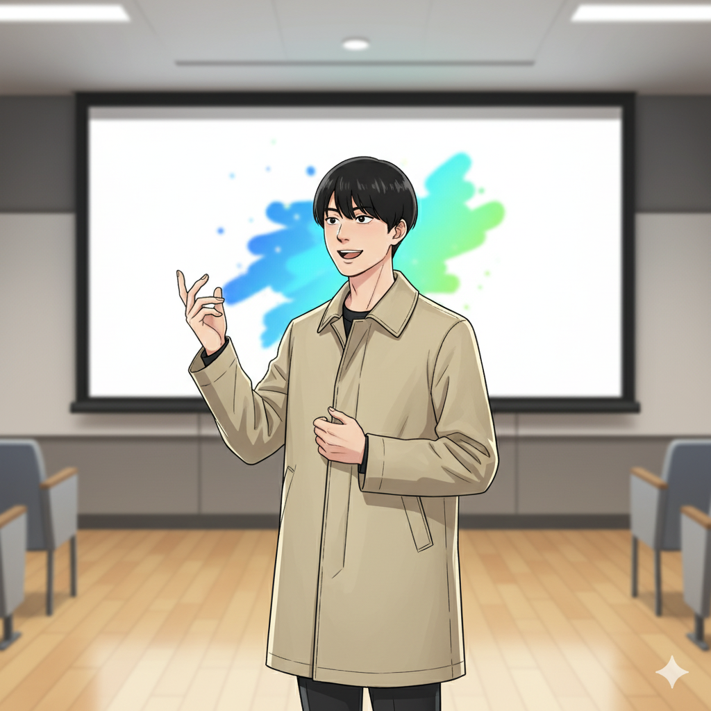
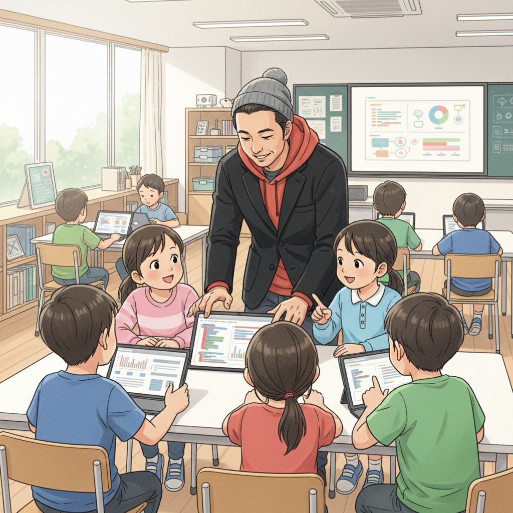
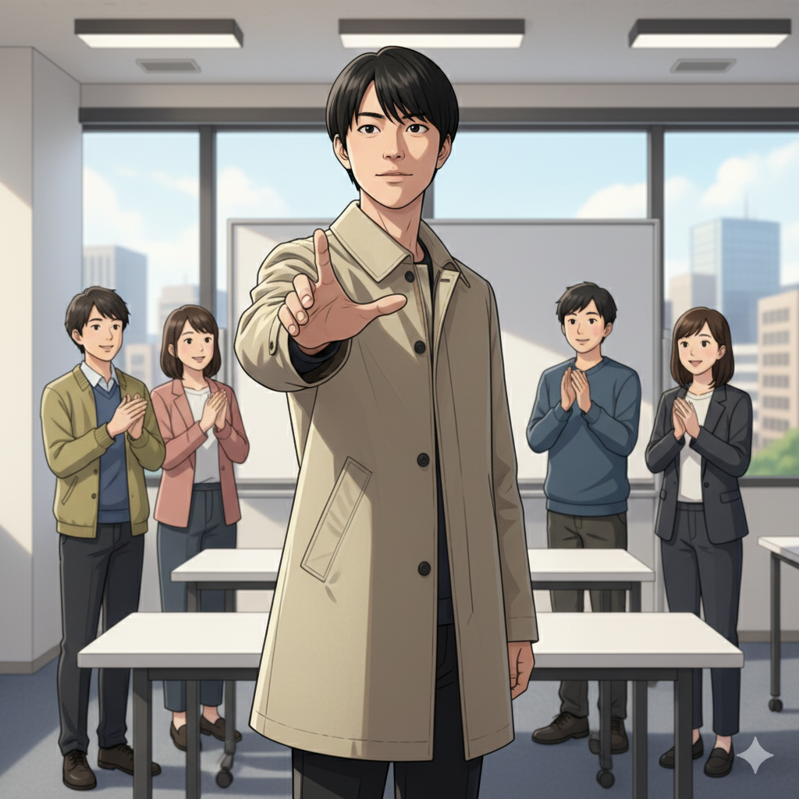

「普通」じゃなくていい！自分の強みを見つけるまで

「みんなと同じようにできない…」そう悩んでいた時期もありました。特に学校では、周りのスピードについていけず、自信をなくす毎日。でも、高校生の時、if塾の塾頭と出会って、僕の世界は大きく変わりました。
塾頭は、僕のASD（自閉スペクトラム症）の特性を「個性」として捉え、ICTスキルを伸ばすサポートをしてくれました。集中力や細部へのこだわりは、プログラミングにおいて大きな武器になる。そう教えてもらい、どんどんのめり込んでいったんです。
特別支援級からの大学進学も、最初は難しいと思っていました。でも、if塾で出会った仲間たちと切磋琢磨する中で、目標を達成することができました。自分に合った学び方を見つけ、得意なことを伸ばす。それが成功への第一歩だと気づいたんです。
15歳で起業！好きなことをビジネスにする方法

プログラミングスキルが身についた頃、塾頭から「自分のスキルを活かして何かやってみない？」と声をかけられました。最初は戸惑いましたが、自分の作ったツールが誰かの役に立つなら、こんなに嬉しいことはない！そう思って、個人事業主として起業することを決意しました。
起業してからは、壁にぶつかることもたくさんありました。でも、if塾で培った問題解決能力や、周りの人に頼る力があったからこそ、乗り越えることができました。発達特性を持つからこそ、周りとは違う視点を持つことができ、それが新しいアイデアを生み出す源泉になっています。
ビジコンにも積極的に参加し、自分のアイデアをプレゼンする経験を積みました。最初は緊張しましたが、自分の想いを伝えることの大切さを学びました。そして、何よりも大切なのは、情熱を持って取り組むこと。好きなことだからこそ、困難も乗り越えられるんです。
塾頭が語る、発達特性は「才能」の原石

発達特性を持つ子どもたちは、周りとは違う視点や、驚くほどの集中力を持っていることがあります。それは、社会に出ても大きな強みになり得る「才能」の原石です。大切なのは、その才能を見つけ、磨き、活かす環境を提供すること。
if塾では、一人ひとりの個性を尊重し、好きなこと、得意なことを伸ばすサポートをしています。小さな成功体験を積み重ねることで、自信をつけ、自分らしい成長の形を見つけてほしい。そう願っています。
塾長の山﨑君も、中学時代は特別支援学級に通っていましたが、高校で私と出会い、国立大学に進学しました。自身の経験を活かして、後輩たちのメンターとして活躍してくれています。仲間との出会いが、人生を大きく変えることもあるんです。
未来へのメッセージ：自分らしいキャリアを築こう！

「発達障害だから…」と諦めないでください。あなたの個性は、必ず誰かの役に立ちます。好きなこと、得意なことを追求し、自分らしいキャリアを築いてください。
フリーランスとして働く道もあれば、スタートアップで新しい価値を創造する道もあります。ICTスキルを身につければ、可能性は無限に広がります。if塾では、あなたの才能を開花させるためのサポートを全力で行います。
Y君のように、eスポーツの世界で活躍する道もあります。彼はASDの特性を活かし、驚異的な集中力で世界と戦っています。あなたの「好き」を最大限に活かせる場所が、きっと見つかるはずです。
一歩踏み出す勇気を持って、自分らしい未来を切り拓いていきましょう！
🎯 興味を持っていただいた方へ
if塾では、発達特性を持つ子どもたちの「好き」を「才能」に変える教育を行っています。現在の記事内容と実際の活動に大きなズレはありませんが、詳細については直接お問い合わせください。
📌 記事について
この記事は、塾頭による完全自動化への挑戦としてAIが自動生成しています。将来的には塾頭が執筆しているような記事になることを目指しており、現時点では事実と異なる内容が含まれる可能性があります。最新の正確な情報については、お問い合わせフォームよりご確認ください。
🤖 Generated with AI - if塾のブログ自動化プロジェクト